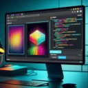
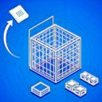

A console-driven image manipulation playground. Drop or paste images and manipulate them via JavaScript. Perfect for quick image editing experiments.

A glTF (.glb) file loader and extractor. View and extract images and meshes from 3D models in your browser.